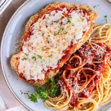

Parmesan is often at its best when prepared at home. Many restaurant versions tend to smother the chicken in excessive sauce and cheese, leaving it heavy and soggy. With this approach, however, you can enjoy a perfectly balanced, crispy, and flavorful dish.
Pound chicken evenly: Pound the boneless chicken breasts out to an even thickness so they cook evenly. Basically, you're pounding the thick part down to the size of the thin part, about a 1/2-inch thick.
Don't skimp on seasoning: Salt and pepper the chicken well. Then don't bother with salting the flour and bread crumbs.
Add Parmesan to the bread crumbs: Use panko bread crumbs mixed with a little finely grated Parmesan cheese. When you fry the breaded chicken, the Parmesan will give it an extra crunch and boost the flavor.
Rest before cooking: Before frying, let the breaded chicken sit on the counter for about 15 minutes. This helps the coating to adhere to the chicken breast
Less sauce, better texture: This is key—Don't drown the poor breaded and fried chicken in sauce and smother it in cheese. Too much of a good thing is too much. You did all the work creating a crisp coating, why make it soggy with too much sauce and cheese?
Make sure your oven is hot, hot, hot: Be sure your oven is completely preheated to 450 degrees F (230 degrees C). You'll want the cheese to brown slightly and the breading to crisp up before the chicken gets overcooked, and a nice hot oven is the way to go.